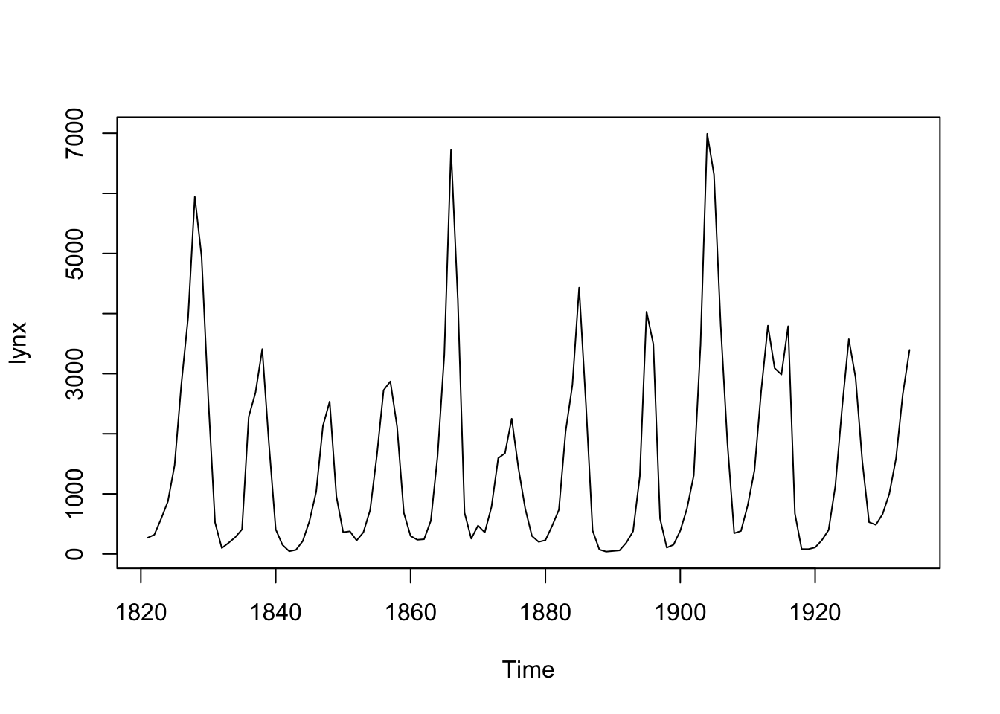

Fitting sGP Models to the Lynx Dataset: An Intermediate Tutorial
Ziang Zhang
2024-11-20
Last updated: 2024-11-21
Checks: 7 0
Knit directory: online_tut/
This reproducible R Markdown analysis was created with workflowr (version 1.7.1). The Checks tab describes the reproducibility checks that were applied when the results were created. The Past versions tab lists the development history.
Great! Since the R Markdown file has been committed to the Git repository, you know the exact version of the code that produced these results.
Great job! The global environment was empty. Objects defined in the global environment can affect the analysis in your R Markdown file in unknown ways. For reproduciblity it’s best to always run the code in an empty environment.
The command set.seed(20241120) was run prior to running
the code in the R Markdown file. Setting a seed ensures that any results
that rely on randomness, e.g. subsampling or permutations, are
reproducible.
Great job! Recording the operating system, R version, and package versions is critical for reproducibility.
Nice! There were no cached chunks for this analysis, so you can be confident that you successfully produced the results during this run.
Great job! Using relative paths to the files within your workflowr project makes it easier to run your code on other machines.
Great! You are using Git for version control. Tracking code development and connecting the code version to the results is critical for reproducibility.
The results in this page were generated with repository version d910a7c. See the Past versions tab to see a history of the changes made to the R Markdown and HTML files.
Note that you need to be careful to ensure that all relevant files for
the analysis have been committed to Git prior to generating the results
(you can use wflow_publish or
wflow_git_commit). workflowr only checks the R Markdown
file, but you know if there are other scripts or data files that it
depends on. Below is the status of the Git repository when the results
were generated:
Ignored files:
Ignored: .DS_Store
Ignored: .Rproj.user/
Ignored: analysis/.DS_Store
Ignored: code/.DS_Store
Untracked files:
Untracked: code/functions.R
Untracked: code/tut.cpp
Untracked: code/tut.o
Untracked: code/tut.so
Unstaged changes:
Modified: analysis/_site.yml
Deleted: analysis/license.Rmd
Note that any generated files, e.g. HTML, png, CSS, etc., are not included in this status report because it is ok for generated content to have uncommitted changes.
These are the previous versions of the repository in which changes were
made to the R Markdown (analysis/lynx.rmd) and HTML
(docs/lynx.html) files. If you’ve configured a remote Git
repository (see ?wflow_git_remote), click on the hyperlinks
in the table below to view the files as they were in that past version.
| File | Version | Author | Date | Message |
|---|---|---|---|---|
| Rmd | d910a7c | Ziang Zhang | 2024-11-21 | workflowr::wflow_publish("analysis/lynx.rmd") |
| html | 0f15650 | Ziang Zhang | 2024-11-21 | Build site. |
| Rmd | 64fcf99 | Ziang Zhang | 2024-11-21 | workflowr::wflow_publish("analysis/lynx.rmd") |
| html | 8e9829b | Ziang Zhang | 2024-11-20 | Build site. |
| Rmd | b167966 | Ziang Zhang | 2024-11-20 | workflowr::wflow_publish("analysis/lynx.rmd") |
Introduction:
In this tutorial, we will use the lynx dataset as an
example, which can be accessed directly from R. Let’s load the dataset
and visualize it:
data <- data.frame(year = seq(1821, 1934, by = 1), y = as.numeric(lynx))
data$x <- data$year - min(data$year)
plot(lynx)
| Version | Author | Date |
|---|---|---|
| 8e9829b | Ziang Zhang | 2024-11-20 |
Based on a visual examination of the dataset, we can observe an obvious 10-year quasi-periodic behavior in the lynx count with evolving amplitudes over time. Therefore, we will consider fitting the following model:
\[ \begin{equation} \begin{aligned} y_i|\lambda_i &\sim \text{Poisson}(\lambda_i) ,\\ \log(\lambda_i) &= \eta_i = \beta_0 + g(x_i) + \xi_i,\\ g &\sim \text{sGP}_{\alpha} \big(\sigma\big), \ \alpha = \frac{2\pi}{10}, \\ \xi_i &\sim N(0,\sigma_\xi). \end{aligned} \end{equation} \] Here, each \(y_i\) represents the lynx count, \(x_i\) represents the number of years since 1821, and \(\xi_i\) is an observation-level random intercept to account for overdispersion effect.
Preparation:
To carry out our inference in a fully Bayesian manner, we will load the following required packages:
require(sGPfit)
require(BayesGP)
require(aghq)
require(TMB)
require(tidyverse)
require(Matrix)If you haven’t installed the prototype package sGPfit yet, you can
download it from GitHub using the following command:
devtools::install_git("https://github.com/AgueroZZ/sGPfit").
In this example, we will also use the aghq package for posterior approximation. To utilize it, we need to compile a C++ template for the model and load the output. Execute the following code to compile the C++ file and load the resulting library:
compile(file = "code/tut.cpp")
dyn.load(dynlib("code/tut"))Once the C++ file is compiled and the library is loaded, we can proceed with the remaining inference procedures.
Prior Elicitation:
To specify the priors for the sGP boundary conditions and the intercept parameter, we assume independent normal priors with mean 0 and variance 1000. For the overdispersion parameter \(\sigma_\xi\), we assign an exponential prior with \(P(\sigma_\xi > 1) = 0.01\).
To determine the prior for the standard deviation parameter \(\sigma\) of the sGP, we employ the concept
of predictive standard deviation (PSD). We start with an exponential
prior on the 50 years PSD: \[P(\sigma(50)>1) = 0.01.\] To convert
this prior to the original standard deviation parameter \(\sigma\), we use the
compute_d_step_sGPsd function from the sGPfit
package:
prior_PSD <- list(u = 1, alpha = 0.01)
correction_factor <- sGPfit::compute_d_step_sGPsd(d = 50, a = 2*pi/10)
prior_SD <- list(u = prior_PSD$u/correction_factor, alpha = prior_PSD$alpha)
prior_SD$u
[1] 0.1256637
$alpha
[1] 0.01Based on the above computation, the corresponding exponential prior on the original SD parameter \(\sigma\) is: \[P(\sigma>0.126) = 0.01.\]
Inference of the quasi-periodic function:
First, we need to set up the design matrix X for the two
boundary conditions and the intercept parameter:
x <- data$x
a <- 2*pi/10
X <- as(cbind(cos(a*x),sin(a*x),1), "dgTMatrix")To perform inference for the unknown function \(g\) using the sGP, we have two possible approaches:
- This approach is most efficient when the locations
xare equally spaced. For large datasets with irregularly spaced locations, the second approach using the seasonal B-spline (sB-spline) approximation is more computationally efficient. - The sGP is approximated as \(\tilde{g}k(x) = \sum{i=1}^k w_i \psi_i(x)\), where \({\psi_i, i \in [k]}\) is a set of sB-spline basis functions, and \(\boldsymbol{w} = {w_i, i \in [k]}\) is a set of Gaussian weights.
Inference with the State-Space approach:
To use the state-space representation, we need to create two
additional matrices: \(B\) and \(Q\). The matrix \(B\) is the design matrix of each value of
\([g(x_i),g'(x_i)]\), which will be
(mostly) a diagonal matrix in this case. The matrix \(Q\) is the precision matrix of \([g(x),g'(x)]\), which can be
constructed using the joint_prec_construct function.
n = length(x)
B <- Matrix::Diagonal(n = 2*n)[,1:(2*n)]
B <- B[seq(1,2*n,by = 2),][, -c(1:2)]
Q <- joint_prec_construct(a = a, t_vec = x[-1], sd = 1)
Q <- as(as(Q, "matrix"),"dgTMatrix")With the matrices ready, the model can be fitted using
aghq as follows:
tmbdat <- list(
# Design matrix
B = B,
X = X,
# Precision matrix
P = Q,
logPdet = as.numeric(determinant(Q, logarithm = T)$modulus),
# Response
y = data$y,
# Prior
u = prior_SD$u,
alpha = prior_SD$alpha,
u_over = prior_PSD$u,
alpha_over = prior_PSD$alpha,
betaprec = 0.001
)
tmbparams <- list(
W = c(rep(0, (ncol(B) + ncol(X) + length(data$y)))),
theta = 0,
theta_over = 0
)
ff <- TMB::MakeADFun(
data = tmbdat,
parameters = tmbparams,
random = "W",
DLL = "tut",
silent = TRUE
)
ff$he <- function(w) numDeriv::jacobian(ff$gr,w)
fitted_mod <- aghq::marginal_laplace_tmb(ff,5,c(0,0))Inference with the seasonal-B spline approach:
To use the sB-spline approach, the sGP is approximated as \(\tilde{g}_k(x) = \sum_{i=1}^k w_i \psi_i(x)\), where \(\{\psi_i, i \in [k]\}\) is a set of sB-spline basis functions, and \(\boldsymbol{w} = \{w_i, i \in [k]\}\) is a set of Gaussian weights.
In this case, the design matrix \(B\) will be defined with element \(B_{ij} = \psi_j(x_i)\), which can be
constructed using the Compute_B_sB function. The matrix
\(Q\) will be the precision matrix of
the Gaussian weights \(\boldsymbol{w}\), which can be constructed
using the Compute_Q_sB function. As an example, let’s
consider \(k = 30\) sB-spline basis
functions constructed with equal spacing:
B2 <- Compute_B_sB(x = data$x, a = a, region = range(data$x), k = 30)
B2 <- as(B2,"dgTMatrix")
Q2 <- Compute_Q_sB(a = a, k = 30, region = range(data$x))
Q2 <- as(as(Q2, "matrix"),"dgTMatrix")Once these matrices are constructed, the inference can be carried out in a similar manner as before:
tmbdat <- list(
# Design matrix
B = B2,
X = X,
# Precision matrix
P = Q2,
logPdet = as.numeric(determinant(Q2, logarithm = T)$modulus),
# Response
y = data$y,
# Prior
u = prior_SD$u,
alpha = prior_SD$alpha,
u_over = prior_PSD$u,
alpha_over = prior_PSD$alpha,
betaprec = 0.001
)
tmbparams <- list(
W = c(rep(0, (ncol(B2) + ncol(X) + length(data$y)))),
theta = 0,
theta_over = 0
)
ff <- TMB::MakeADFun(
data = tmbdat,
parameters = tmbparams,
random = "W",
DLL = "tut",
silent = TRUE
)
ff$he <- function(w) numDeriv::jacobian(ff$gr,w)
fitted_mod_sB <- aghq::marginal_laplace_tmb(ff,5,c(0,0))Comparing the results from the two approachs
First, let’s obtain the posterior samples and summary using the state-space representation:
## Posterior samples:
samps1 <- sample_marginal(fitted_mod, M = 3000)
g_samps <- B %*% samps1$samps[1:ncol(B),] + X %*% samps1$samps[(ncol(B) + 1):(ncol(B) + ncol(X)),]## Posterior summary:
mean <- apply(as.matrix(g_samps), MARGIN = 1, mean)
upper <- apply(as.matrix(g_samps), MARGIN = 1, quantile, p = 0.975)
lower <- apply(as.matrix(g_samps), MARGIN = 1, quantile, p = 0.025)Next, let’s plot the posterior results obtained from the state-space representation:
## Plotting
plot(log(data$y) ~ data$x, xlab = "time", ylab = "Posterior of g(x)", ylim = c(3.1,9))
lines(upper ~ data$x, type = "l", col = "red", lty = "dashed")
lines(mean ~ data$x, type = "l", col = "blue")
lines(lower ~ data$x, type = "l", col = "red", lty = "dashed")
| Version | Author | Date |
|---|---|---|
| 8e9829b | Ziang Zhang | 2024-11-20 |
## Posterior of the SD parameter:
prec_marg <- fitted_mod$marginals[[1]]
logpostsigma <- compute_pdf_and_cdf(prec_marg,list(totheta = function(x) -2*log(x),fromtheta = function(x) exp(-x/2)),interpolation = 'spline')
plot(pdf_transparam ~ transparam, data = logpostsigma, type = 'l', xlab = "SD", ylab = "Post")
| Version | Author | Date |
|---|---|---|
| 8e9829b | Ziang Zhang | 2024-11-20 |
## Posterior of the Overdispersion parameter:
prec_marg <- fitted_mod$marginals[[2]]
logpostsigma <- compute_pdf_and_cdf(prec_marg,list(totheta = function(x) -2*log(x),fromtheta = function(x) exp(-x/2)),interpolation = 'spline')
plot(pdf_transparam ~ transparam, data = logpostsigma, type = 'l', xlab = "Overdispersion", ylab = "Post")
| Version | Author | Date |
|---|---|---|
| 8e9829b | Ziang Zhang | 2024-11-20 |
Now, let’s obtain the posterior samples and summary using the seasonal B-spline approach:
## Posterior samples:
samps2 <- sample_marginal(fitted_mod_sB, M = 3000)
g_samps_2 <- B2 %*% samps2$samps[1:ncol(B2),] + X %*% samps2$samps[(ncol(B2) + 1):(ncol(B2) + ncol(X)),]## Posterior summary:
mean2 <- apply(as.matrix(g_samps_2), MARGIN = 1, mean)
upper2 <- apply(as.matrix(g_samps_2), MARGIN = 1, quantile, p = 0.975)
lower2 <- apply(as.matrix(g_samps_2), MARGIN = 1, quantile, p = 0.025)Finally, let’s plot the posterior results obtained from the seasonal B-spline approach:
## Plotting
plot(log(data$y) ~ data$x, xlab = "time", ylab = "Posterior of g(x)", ylim = c(3.1,9))
lines(upper2 ~ data$x, type = "l", col = "red", lty = "dashed")
lines(mean2 ~ data$x, type = "l", col = "blue")
lines(lower2 ~ data$x, type = "l", col = "red", lty = "dashed")
| Version | Author | Date |
|---|---|---|
| 8e9829b | Ziang Zhang | 2024-11-20 |
## Posterior of the SD parameter:
prec_marg <- fitted_mod_sB$marginals[[1]]
logpostsigma <- compute_pdf_and_cdf(prec_marg,list(totheta = function(x) -2*log(x),fromtheta = function(x) exp(-x/2)),interpolation = 'spline')
plot(pdf_transparam ~ transparam, data = logpostsigma, type = 'l', xlab = "SD", ylab = "Post")
| Version | Author | Date |
|---|---|---|
| 8e9829b | Ziang Zhang | 2024-11-20 |
## Posterior of the Overdispersion parameter:
prec_marg <- fitted_mod_sB$marginals[[2]]
logpostsigma <- compute_pdf_and_cdf(prec_marg,list(totheta = function(x) -2*log(x),fromtheta = function(x) exp(-x/2)),interpolation = 'spline')
plot(pdf_transparam ~ transparam, data = logpostsigma, type = 'l', xlab = "Overdispersion", ylab = "Post")
| Version | Author | Date |
|---|---|---|
| 8e9829b | Ziang Zhang | 2024-11-20 |
sessionInfo()R version 4.3.1 (2023-06-16)
Platform: aarch64-apple-darwin20 (64-bit)
Running under: macOS Monterey 12.7.4
Matrix products: default
BLAS: /Library/Frameworks/R.framework/Versions/4.3-arm64/Resources/lib/libRblas.0.dylib
LAPACK: /Library/Frameworks/R.framework/Versions/4.3-arm64/Resources/lib/libRlapack.dylib; LAPACK version 3.11.0
locale:
[1] en_US.UTF-8/en_US.UTF-8/en_US.UTF-8/C/en_US.UTF-8/en_US.UTF-8
time zone: America/Chicago
tzcode source: internal
attached base packages:
[1] stats graphics grDevices utils datasets methods base
other attached packages:
[1] Matrix_1.6-4 lubridate_1.9.3 forcats_1.0.0 stringr_1.5.1
[5] dplyr_1.1.4 purrr_1.0.2 readr_2.1.5 tidyr_1.3.1
[9] tibble_3.2.1 ggplot2_3.5.1 tidyverse_2.0.0 TMB_1.9.15
[13] aghq_0.4.1 BayesGP_0.1.3 sGPfit_1.0.1 workflowr_1.7.1
loaded via a namespace (and not attached):
[1] gtable_0.3.6 xfun_0.48 bslib_0.8.0
[4] ks_1.14.3 processx_3.8.4 lattice_0.22-6
[7] callr_3.7.6 tzdb_0.4.0 numDeriv_2016.8-1.1
[10] bitops_1.0-9 vctrs_0.6.5 tools_4.3.1
[13] ps_1.8.0 generics_0.1.3 fansi_1.0.6
[16] cluster_2.1.6 highr_0.11 fds_1.8
[19] pkgconfig_2.0.3 KernSmooth_2.23-24 data.table_1.16.2
[22] lifecycle_1.0.4 compiler_4.3.1 git2r_0.33.0
[25] statmod_1.5.0 munsell_0.5.1 getPass_0.2-4
[28] mvQuad_1.0-8 httpuv_1.6.15 rainbow_3.8
[31] htmltools_0.5.8.1 sass_0.4.9 RCurl_1.98-1.16
[34] yaml_2.3.10 pracma_2.4.4 later_1.3.2
[37] pillar_1.9.0 jquerylib_0.1.4 whisker_0.4.1
[40] MASS_7.3-60 cachem_1.1.0 mclust_6.1.1
[43] tidyselect_1.2.1 digest_0.6.37 mvtnorm_1.3-1
[46] stringi_1.8.4 splines_4.3.1 pcaPP_2.0-5
[49] rprojroot_2.0.4 fastmap_1.2.0 grid_4.3.1
[52] colorspace_2.1-1 cli_3.6.3 magrittr_2.0.3
[55] utf8_1.2.4 withr_3.0.2 scales_1.3.0
[58] promises_1.3.0 timechange_0.3.0 rmarkdown_2.28
[61] httr_1.4.7 deSolve_1.40 hms_1.1.3
[64] evaluate_1.0.1 knitr_1.48 rlang_1.1.4
[67] Rcpp_1.0.13-1 hdrcde_3.4 glue_1.8.0
[70] fda_6.2.0 rstudioapi_0.16.0 jsonlite_1.8.9
[73] R6_2.5.1 fs_1.6.4